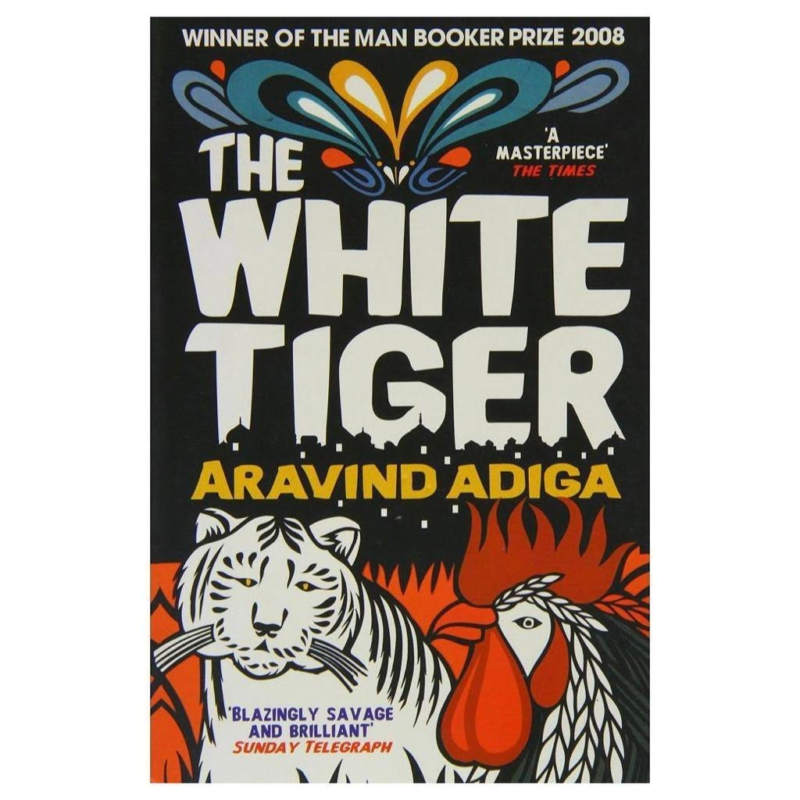
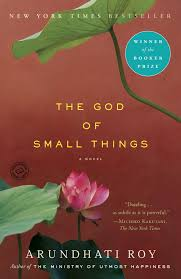
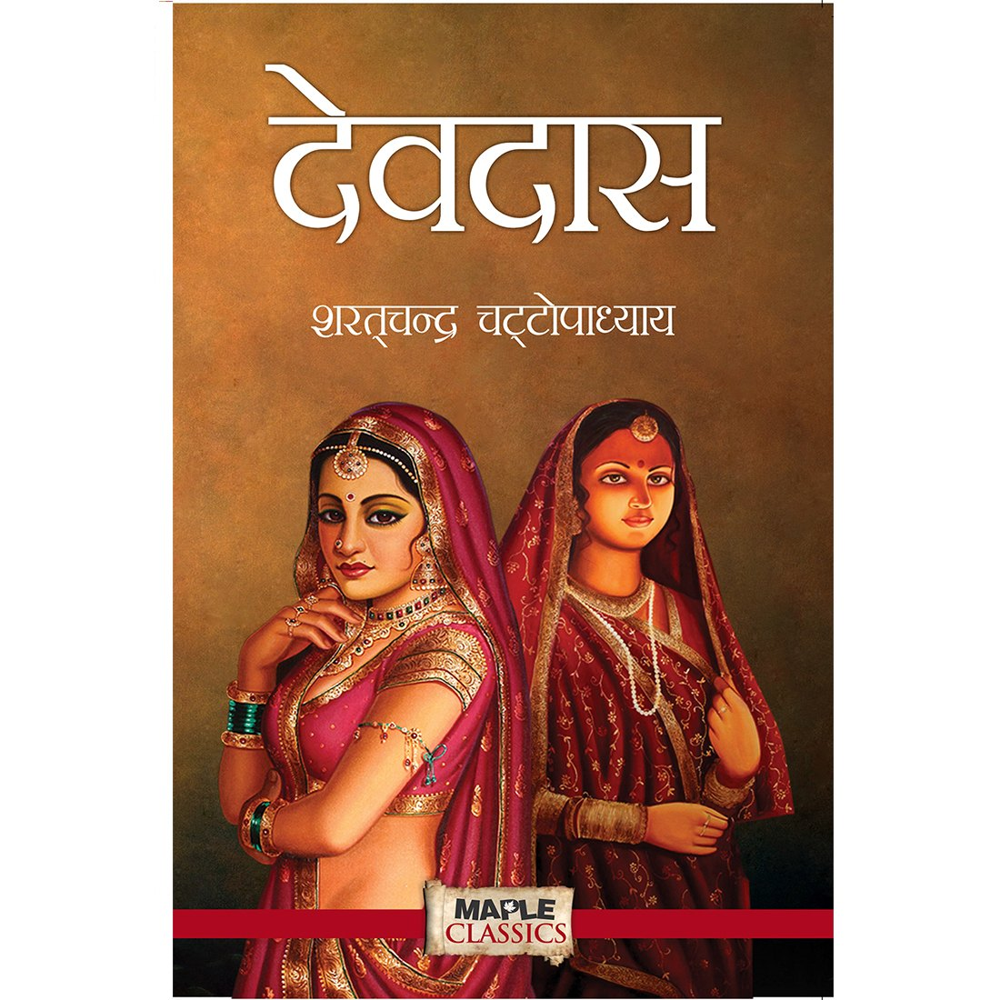
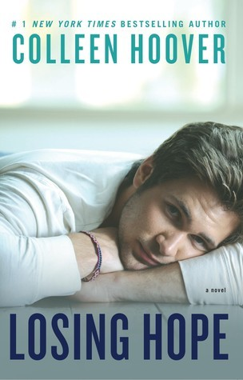

The Old Man and the Sea by Ernest Hemingway is a classic novella that has garnered praise for its portrayal of human resilience and the beauty and brutality of nature.
Here's a breakdown of the book's strengths and some things to consider before diving in:
Strengths:
Enduring Themes: The story of Santiago, an old fisherman battling a giant marlin, is an allegory for the struggles and triumphs of the human spirit.
It explores themes of perseverance, respect for nature, and the dignity found in defeat.
Hemingway's Prose: Hemingway's writing style is concise and evocative.
He uses short, declarative sentences and vivid descriptions to create a powerful atmosphere at sea.
Man vs. Nature:
The central conflict between Santiago and the marlin is thrilling and suspenseful.
Hemingway captures the raw power and majesty of the natural world.
2.THE WHITE TIGER

He White Tiger by Aravind Adiga is a multifaceted novel that sparks discussion.
Here's a look at its strengths and weaknesses to help you decide if it's the right read for you:
Strengths
Unique Voice: The story is narrated by Balram Halwai, a cunning and ambitious man from a poor background.
His sardonic humor and unflinching perspective on class struggle in modern India make for a compelling read.
Social Commentary: The novel exposes the stark realities of poverty and corruption in India.
Balram's journey sheds light on the vast gap between the rich and the poor, and the lengths some go to in order to escape their circumstances.
3.THE GOD OF SMALL THINGS

The God of Small Things by Arundhati Roy is a complex and ambitious novel that has garnered a strong following for its lyrical prose and unflinching portrayal of social issues.
Here's a breakdown of the novel's strengths and weaknesses to help you decide if it's the right book for you:
Strengths
Beautiful Language: Roy's writing is undeniably poetic and evocative.
She creates vivid imagery and uses language in a way that is both sensuous and thought-provoking.
Social Commentary: The God of Small Things tackles important themes like caste prejudice, forbidden love, and the lingering effects of childhood trauma.
It offers a powerful critique of Indian society and its social hierarchies.
4.MALGUDI DAYS
A Warm and Whimsical Look at Small-Town Life
"Malgudi Days" isn't a single story, but a collection of 32 interconnected short stories set in the fictional South Indian town of Malgudi.
R.K. Narayan's masterful storytelling paints a vivid picture of this charming little place, bustling with quirky characters and everyday adventures.
Strengths
Universal Themes: Despite its Indian setting, the stories explore universal themes like friendship, love, ambition, and the challenges of growing up.
Readers from all walks of life can connect with the characters' experiences.
5.THE BOOK OF M
Reviews of The Book of M by Peng Shepherd are mixed, praising its originality and strong start but also critiquing its pacing and believability.
Here's a breakdown of what readers liked and disliked:
Positive Reviews Emphasize:
Intriguing Premise: The idea of people losing their shadows and memories is a unique and thought-provoking concept that hooks readers in.
Compelling Characters: While not universally loved, some readers find the characters engaging and their struggles relatable.
6.HARRY POTTER
The Harry Potter series by J.K. Rowling is a global phenomenon, beloved by readers of all ages.
Here's a breakdown of the series' strengths and some things to consider before diving into the wizarding world:
Strengths
Rich World-Building: Rowling crafts a magical universe brimming with detail, from Hogwarts School of Witchcraft and Wizardry to the bustling Diagon Alley.
Compelling Characters: Harry, Ron, Hermione, and the rest of the cast are well-developed characters who grow and change throughout the series.
Readers form strong attachments to them.
7.THE DEVDAS

Sanjay Leela Bhansali's 2002 film Devdas is a visually stunning and emotionally charged take on the classic love story.
Here's a breakdown of the film's strengths and weaknesses to help you decide if it's worth watching:
Strengths
Grand Spectacle: Bhansali is known for his opulent productions, and Devdas is no exception.
The sets, costumes, and musical numbers are lavish and dazzling, transporting viewers to a bygone era of Indian grandeur.
Powerful Performances:
Shah Rukh Khan delivers a nuanced performance as the heartbroken Devdas, while Aishwarya Rai and Madhuri Dixit are both captivating as the two women who love him.
8.IT ENDS WITH US
Colleen Hoover's "It Ends With Us" is a novel that dives into a complex love story.
Lily, the protagonist, finds herself caught between two strong emotions.
Ryle, a passionate neurosurgeon with a shrouded past, ignites a spark in her.
But Atlas, her childhood sweetheart, represents a safe harbor of stability and familiarity.
As Lily grapples with the consequences of her past and the uncertainty of her present relationships, readers are deeply invested in her journey.
The novel keeps you hooked with its alternating timelines.
The present-day narrative unfolds alongside letters from Lily's past, revealing her heartwarming connection with Atlas.
9.IT STARTS WITH US
"It Starts With Us" by Colleen Hoover picks up the story of Lily from "It Ends With Us."
This sequel explores themes of healing, second chances, and navigating co-parenting with an ex.
Here's a breakdown of the novel's strengths and weaknesses:
Strengths:
Focus on Healing: The book sheds light on the long-term effects of abuse and Lily's journey towards a healthy relationship.
Second Chance Romance: Fans of Lily and Atlas's connection will enjoy seeing their bond rekindle.
Realistic Portrayal: The novel depicts the challenges of co-parenting and the complexities of moving forward after abuse.
10.LOSING HOPE

Reviews for "Losing Hope" by Colleen Hoover generally fall into two categories: those focusing on the emotional impact of the story and those comparing it to its prequel, "Hopeless."
Emotional Impact:
Praised for: Its raw portrayal of characters dealing with guilt, grief, and love.
Readers appreciate: Gaining a deeper understanding of Holder's perspective and the heartbreaking events that shaped him.
The story is said to be: Touching, heartbreaking, and offering a glimpse into the power of redemption.

.jpg)
.jpg)
.jpg)
.jpg)